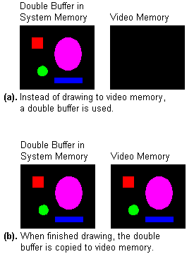
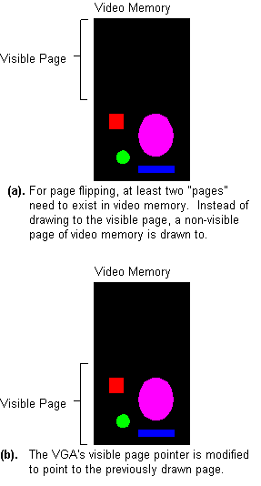
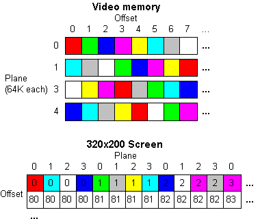
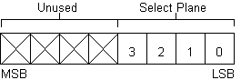
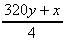
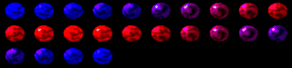
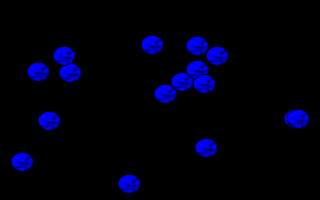
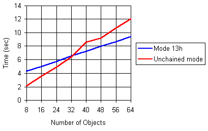

| Why double buffering and/or page flipping? |
Two important concepts used in many games and multimedia applications are double buffering and page flipping. Programmers primarily use these techniques for two purposes:
| Double buffering |
Double Buffering is a fairly simple concept to grasp. Instead of drawing directly to video memory, the program draws everything to a double buffer (Figure 20a). When finished, the program copies the double buffer to video memory all at once (Figure 20b). At that point the program clears the double buffer (if necessary) and the process starts over.
|  Figure 20. Double buffering concept. |
Implementing a double buffer is fairly simple as well. The double buffer is generally the same size as the screen. In mode 0x13, the double buffer would be 64,000 bytes. When the program begins it allocates memory for the double buffer.
unsigned char *double_buffer;
...
double_buffer = (unsigned char *) malloc(320*200);
if (double_buffer==NULL)
{
printf("Not enough memory for double buffer.\n");
exit(1);
}
Then, instead of writing to video memory, the program writes to the double buffer.
/* plot a pixel in the double buffer */ double_buffer[(y<<8) + (y<<6) + x] = color;
When finished, the program copies the double buffer to video memory (with careful consideration of the vertical retrace to eliminate flickering).
while ((inp(INPUT_STATUS_1) & VRETRACE)); while (!(inp(INPUT_STATUS_1) & VRETRACE)); memcpy(VGA,double_buffer,320*200);
Using a double buffer would be faster if, instead of having to copy the information from the double buffer to video memory (address 0xA000:0000), the video card could be programmed to get video data directly from the double buffer rather than from its regular address (0xA000:0000). While this is not possible on the VGA, it is close to how page flipping works.
| Page flipping |
With page flipping, there must be enough video memory for two screens. So, if the screen size is 320x200 at 256 colors, 2*320*200 or 128,000 bytes of video memory must be available. Instead of drawing to the visible area in video memory, or visible page, the program draws to the non-visible page (Figure 21a). When finished, the program swaps the visible page pointer with the non-visible page pointer (Figure 21b). Now the program clears the newly placed non-visible page (if necessary) and the process starts over.
|  Figure 21. Page flipping concept. |
One problem is this: in mode 0x13, only 64K of video memory is available, even if the video card has more memory on it. Even if it is a 4MB video card, mode 0x13 can only access 64K. There is a way, however, to tweak mode 13h into a 256-color mode that has a total of 256K of video memory, so that page flipping is possible. This undocumented mode is sometimes referred to as "mode-x," or "unchained mode."
| Structure of unchained mode |
The VGA card has 256K of memory. Many SVGA cards have much more, but even on those cards, VGA modes can only access the first 256K-except for mode 0x13, which can only access 64K. The reason is that mode 0x13 is a chain-4 mode, which basically means only every forth byte of video memory is used. The reason for this is because the linear structure of the video memory allowed fast and easy video memory access. Turning off chain-4 mode allows the program to access of all 256K of video memory, but involves more complicated programming.
In unchained mode, memory exists in four 64K planes. Each plane corresponds to a specific column of video memory: plane 0 contains pixels 0, 4, 8, etc.; plane 1 contains pixels 1, 5, 9, etc.; plane 2 contains columns 2, 6, 10, etc.; and plane 3 contains columns 3, 7, 11, etc. (Figure 22). So to plot a pixel at position (5,7), plane 1 is selected, and the offset is (320*7+5)/4 = 561.
|  Figure 22. How video memory relates to the screen. |
| Tweaking mode 13h |
Since unchained mode is not a standard VGA mode, it cannot be set using a BIOS function call. Instead, certain VGA registers have to be tweaked. It involves two VGA controllers: the sequence controller (port 0x3C4) and the CRT controller (port 0x3D4).
/* VGA sequence controller */ #define SC_INDEX 0x03c4 #define SC_DATA 0x03c5 /* VGA CRT controller */ #define CRTC_INDEX 0x03d4 #define CRTC_DATA 0x03d5 #define MEMORY_MODE 0x04 #define UNDERLINE_LOC 0x14 #define MODE_CONTROL 0x17 ... /* turn off chain-4 mode */ outp(SC_INDEX, MEMORY_MODE); outp(SC_DATA, 0x06); /* TODO: Insert code to clear the screen here. (the BIOS only sets every fourth byte to zero -- the rest needs to be set to zero, too) */ /* turn off long mode */ outp(CRTC_INDEX, UNDERLINE_LOC); outp(CRTC_DATA, 0x00); /* turn on byte mode */ outp(CRTC_INDEX, MODE_CONTROL); outp(CRTC_DATA, 0xe3);
The VGA registers can sometimes be fairly complex. For a complete list of the VGA registers, visit PC-GPE Online.
| Plotting a pixel in unchained mode |
Plotting a pixel in unchained mode is a tad bit more tedious than it is in mode 0x13, because the proper plane has to be selected. To select a plane, write 2plane to the VGA Map Mask register, where plane is a value from 0 to 3 (Figure 23).
|  Figure 23. Selecting a plane with the Map Mask register. |
The Map Mask register is located at index 2 of the Sequence Controller. To select the Map Mask register, write 2 to the Sequence Controller address at port 0x3C4. Then the Map Mask can be found at the Sequence Controller's data port at port 0x3C5.
plane = (x&3); /* select the map mask register */ outp(0x3c4, 0x02); /* write 2^plane */ outp(0x3c5, 1 << plane);
In mode 0x13, the offset is calculated as 320y + x. Since unchained mode memory is arranged in four planes, the offset in unchained mode is calculated as  (Figure 22).
VGA[(y<<6) + (y<<4) + (x>>2)] = color;
If a value other than a power of two was used to select a plane, multiple planes would be selected. For example, if 13 (binary 1101) were used, planes 0, 2, and 3 would be selected. That means every plane selected is written with the color value. One use for this is fast screen-clearing. If every plane is selected, only 16,000 bytes need to be written, instead of 64,000 like in mode 0x13.
/* set map mask to all 4 planes */ outpw(0x3c4, 0xff02); memset(VGA,0, 16000);
| Page flipping in unchained mode |
First, set up two word-sized variables to keep track of the visible and non-visible pages. These are offsets to video memory.
unsigned int visible_page=0; unsigned int non_visible_page=320*200/4;
Then do all the drawing to the non-visible page. For instance, if a pixel was to be plotted:
/* select plane */ outp(SC_INDEX, MAP_MASK); outp(SC_DATA, 1 << (x&3) ); VGA[non_visible_page+(y<<6)+(y<<4)+(x>>2)]=color;
When all the drawing is finished, it is time to switch the pages. The new offset is set through two registers on the CRT controller. The first, 0x0C, sets the upper 8-bits of the offset, and the second, 0Dh, sets the lower 8-bits.
/* CRT controller registers */ #define HIGH_ADDRESS 0x0C #define LOW_ADDRESS 0x0D ... temp = visible_page; visible_page = non_visible_page; non_visible_page = temp; high_addr=HIGH_ADDRESS | (visible_page & 0xff00); low_addr =LOW_ADDRESS | (visible_page << 8); while ((inp(INPUT_STATUS_1) & VRETRACE)); outpw(CRTC_INDEX, high_addr); outpw(CRTC_INDEX, low_addr); while (!(inp(INPUT_STATUS_1) & VRETRACE));
Here are some things to consider when using page flipping:
In the following program, instead of referring to the pages as
visible and non-visible refers to them as visual
and active. It draws animated balls (Figure 24) around the
screen using both double buffering and page flipping, and then
outputs the results. It defaults to drawing eight balls; a unique
number of balls can be drawn by specifying a number at the
command prompt. In this example, 16 balls were drawn by using the
command unchain 16.
|  Figure 24. balls.bmp. |
| Program: unchain.c |
|
|
||||||||||||
| Having trouble compiling or running the program? See the Troubleshooting page. |
|  Figure 25. Output from unchain.exe. |
Results with 16 objects:
Mode 13h with double buffering:
5.989011 seconds,
23.376147 frames per second.
Unchained mode with page flipping:
4.065934 seconds,
34.432431 frames per second.
Unchained mode with page flipping was
1.472973 times faster.
Although page flipping in unchained mode was faster than
double buffering in mode 0x13 in this example, it is not always
faster. This program was created to prove a point: depending on
the number of pixels drawn and the number of outp()'s
or outpw()'s used in unchained mode, mode 0x13 can
still be faster. The program was tested (ignoring the vertical
retrace) on various numbers of objects to show the relationship
(Figure 26).
|  Figure 26. Unchained mode is not always faster. |
One of the reasons mode 0x13 is sometimes faster than
unchained mode is that for each frame, the selected plane is
changed four times for each ball object. The program could have
been created to select the plane only four times per frame, which
would have increased performance, because outp()'s
and outpw()'s are very slow statements. When
designing a program for unchained mode, the number of outp()'s
and outpw()'s used should be limited to as few as
possible.
| Other unchained modes |
The code below will someday be included in another section of this site, but right know it's just here to show you how to program the different unchained modes, like 320x240 and 360x480.
| Program: modes.c |
This program demonstrates various unchained modes. It supports widths of 320 and 360, and heights of 200, 400, 240, and 480, so there are a total of eight combinations. Setting the mode you want is done like so:
set_unchained_mode(320,240);
The program also demonstrates planar bitmaps, which speeds
things up a bit. Make sure you download ghosts.bmp
to get the program to work.
|
|
||||||||||||
| Having trouble compiling or running the program? See the Troubleshooting page. |